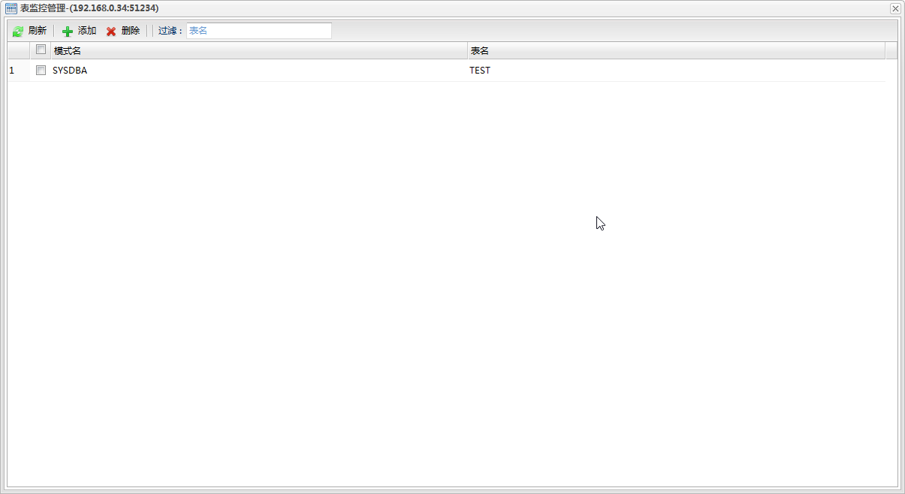
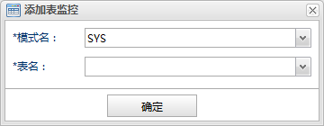

刷新
刷新 添加
添加 删除
删除添加和删除表数据行数监控。单实例的表监控管理入口在表数据分析面板的功能按钮添加/删除，而集群的表监控管理入口在数据库监控面板中的集群分组的操作下拉菜单中的表监控管理。对于集群的表监控添加，会同时在集群的所有站点上添加；同样的删除时也会删除所有站点上的表监控。管理对话框如下图所示:

功能按钮列表| 按钮 | 说明 |
|---|---|
| 刷新 |
刷新监控表列表。 |
| 添加 |
添加监控表。点击打开表监控添加对话框。 |
| 删除 |
删除监控表。 |
| 过滤 | 监控表列表的模式名或表名过滤。输入框中输入内容按回车。 |
监控表列表
| 字段 | 说明 |
|---|---|
| 模式名 | 表的模式名。 |
| 表名 | 表名。 |

模式名
监控表的模式名。从下拉列表中选择一个模式。
表名
监控表的表名。从下拉列表中选择一个表。